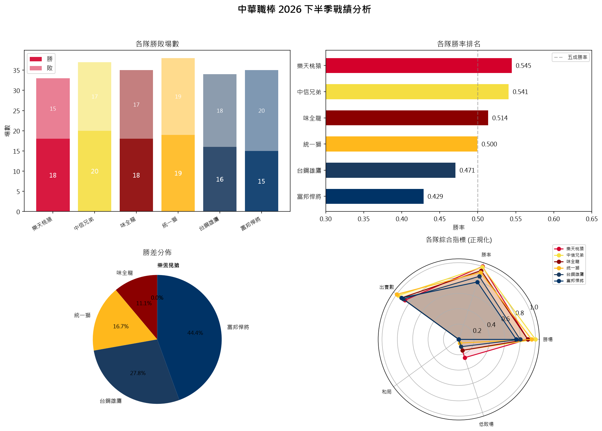
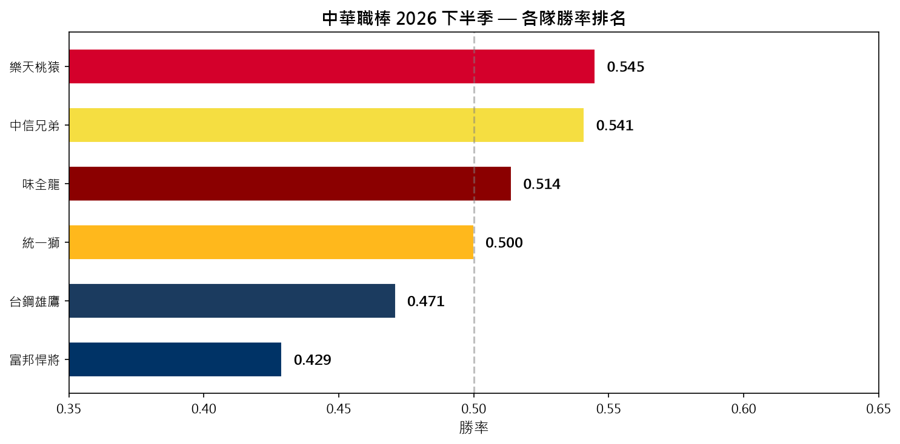

以 Python 打造的輕量級命令列工具，支援基本 curl 請求，並內建中華職棒戰績爬取與圖表視覺化功能。
本專案以 Python 為核心，實作一個簡易的 curl 替代工具。除了一般的 HTTP 請求功能外，更進一步整合了中華職棒 CPBL 官方網站的戰績爬取與視覺化圖表，讓工具兼具實用性與趣味性。
圖表功能則借助 matplotlib 與 beautifulsoup4 兩個第三方套件完成，分別負責圖表繪製與 HTML 解析。
以下為使用 --cpbl --chart 產生的四合一分析圖表：

獨立的勝率排名大圖：

| 檔案 | 用途 |
|---|---|
| ym_curl.py | 主程式：curl 功能 + CPBL 戰績爬取 + 圖表生成 |
| cpbl_standings_chart.png | 四合一戰績分析圖（勝敗場數、勝率排名、勝差分佈、雷達圖） |
| cpbl_winrate_ranking.png | 各隊勝率排名獨立大圖 |
本工具使用以下第三方套件（CPBL 功能所需）：
| 套件 | 用途 |
|---|---|
| beautifulsoup4 | 解析 CPBL 官網 HTML，提取戰績表格資料 |
| matplotlib | 繪製戰績長條圖、勝率排名圖、圓餅圖、雷達圖 |